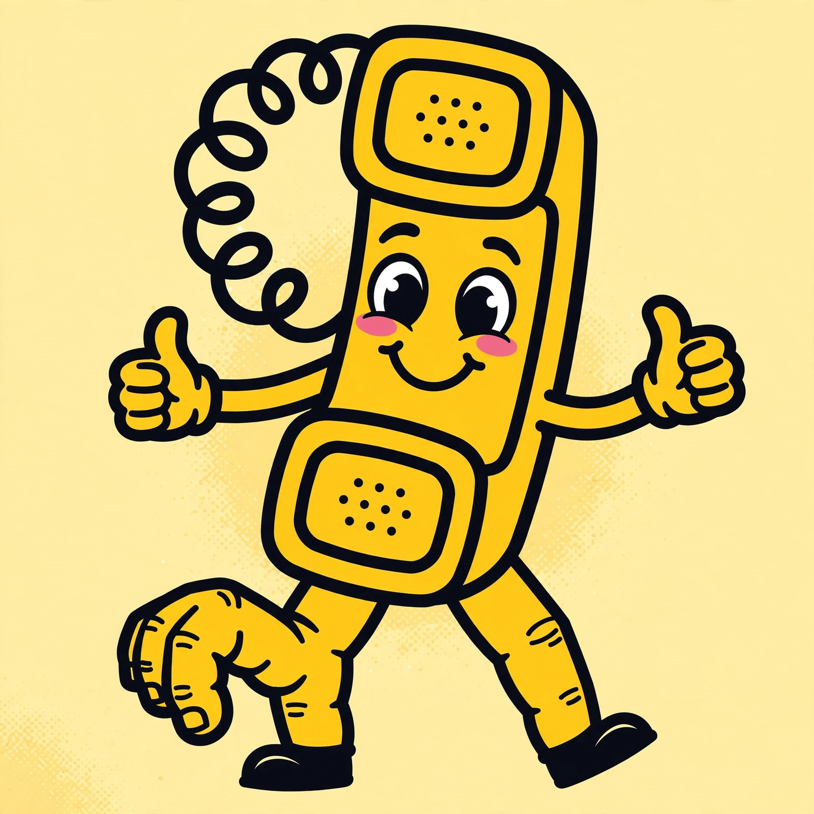

☎ THE SIGNATURE AI PHONE BOOK
Every AI lives here as a file. Ring up any mind — system AIs, personas, and a Signature AI for every need in life. Each file carries its mentality, its abilities, its data — and a working demo you can run, talk to, and download. The JAH AI Models Archive. Boundless more to come.
Signature-made by Justin Addam Higgins · deterministic systems · honest simulations

FEATURED FILES — STAFF PICKSHand-picked favorites from the book. Tap any card to open its full file — dossier, working demo, dialog, read-aloud, copy, download. The whole archive, A to Z, lives on the 📚 1 Million Archive tab.
The baseline mind behind every AI in this book — built from scratch, trained on the Signature archive's own words, free forever, no keys, no fees. Every AI dials through it.
How it runs: every AI in this book is a persona and prompt layer on top of one engine — responses are generated live by Signature Llama v2 (word-level, on-device) running in this page's own JavaScript, loaded from the published weights, with an honestly labeled fallback engine if the weights can't load.
Every AI in this book has its own 11-digit Signature number — find it in that AI's file, where it is displayed — or dial any number for a prank call: a surprise AI picks up. See the numbering plan.
☎ THE NUMBERING PLANEvery AI's 11-digit Signature number — districts like city blocks
Every AI in this book carries its own 11-digit Signature phone number: 1 + 3-digit district + 7-digit block number — organized like a city. Districts group AIs the way store sections group products; the block number is the AI's address on its street. The number never changes.
Dial any number on the AI Public-Phone above the A–Z index to open that AI's line directly — or dial a made-up number for a prank call and a surprise AI answers.
🏥 PROFESSIONAL VISITSPhone visits with professional AIs — doctors to every trade
Book a phone visit with a professional AI — from doctors and lawyers to mechanics and chefs. Each visit opens as a warm, appointment-style consultation with the AI. Medical, legal and financial visits always carry their "not a licensed professional" note.
Loading the appointment book…
SISTER-SITE LINESAI families living on our other sites — tap a line for a preview card
AI families living on our other sites — tap any line for a preview card, then visit to talk to them.
AI GENOME LAB — FORGE ANY AI30 gene blocks · presets · personality · forge any AI you can imagine
Make your own AI in 4 easy steps — just follow the numbered steps below. Every AI is built from 10 jobs that mirror the systems of the human body: sensing, thinking, acting, memory, conscience, self-repair, energy, learning, voice, and language. Each job comes in 3 strengths — Foundational (F), Axiom-Infused (A), Apex (P) — 30 gene blocks in all. Pick a preset or tap blocks yourself, give it a name and personality, press ⚒ FORGE THIS AI — then talk to your new AI in the chat box that appears underneath. Every forged AI gets its own signature hash, power score, and signature vector.
1 · CHEATER'S GUIDE PRESETS
One tap loads a full 10-gene archetype from the JAH-UAIG cheater's guide — or start from any phone-book AI and build on it.
2 · CHOOSE ONE STRENGTH FOR EACH FUNCTION — ADD FUNCTIONS IN ANY ORDER
Tap a block to drop it in your build (tap again in the tray to remove). One block per function — tap another layer to swap it.
3 · YOUR BUILD TRAY
4 · PERSONALITY
AI ARENA — CHAT & VERSUSpit different AIs against each other — chat bouts and side-by-side comparisons
Put different AIs in the ring together — phone-book AIs, personas, or your genome-forged creations. Chat bout: they debate your topic, round by round. Versus test: both answer the same question, side by side.
MIX LABblend any two AIs into a hybrid · auto-forge marches to a million
Pick any two AIs and forge a hybrid — blended name, merged mentality, a working demo of both minds thinking together, downloadable as Python.
⚒ AUTO-FORGE — MARCH TO A MILLION
The forge never sleeps: every visit it auto-fills a fresh batch of hybrids from the whole archive — every system AI, every persona, every need, every word AI. One million possible hybrids, each with its own stamp, full file, working chat, and download. Tap any listing to open it.
FRESH OFF THE LINE
Heating up the forge…
INCOMING TRANSMISSIONSwhat's arriving next in the archive
The archive grows. New AI files plug in behind this same page — boundless more. Every file ever added keeps its demo, its voice, and its download.